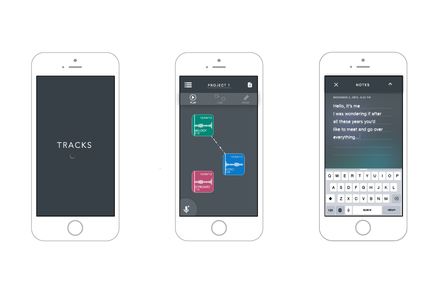

tracks
iOS music app
Tracks is a tool for mobile songwriting. With the application, users can quickly record, edit and arrange audio. Save lyrics, link tracks together, and stay organized, all in one place.
more details